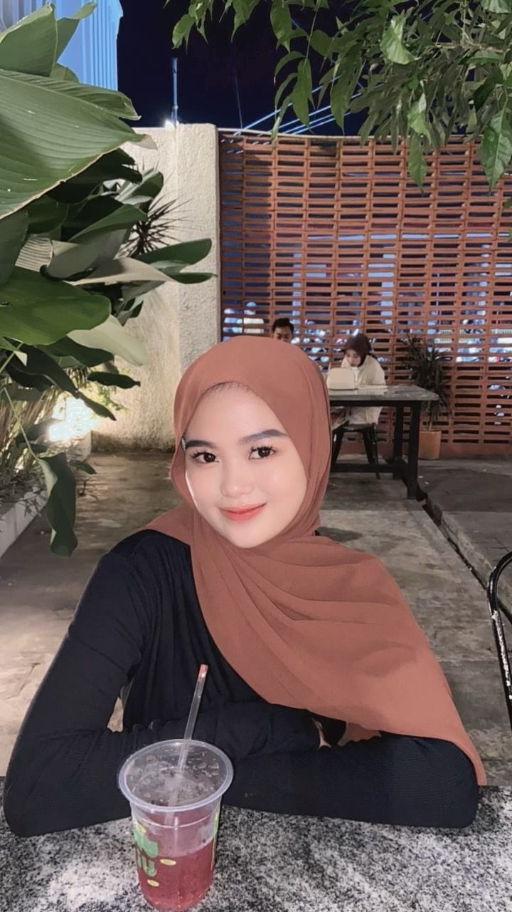

Veni Lia Chalista
Diposting pada: 24 April 2025

Halo! Nama saya Veni Lia Chalista. Perjalanan saya menjadi seorang Web Developer dimulai dari ketertarikan saya terhadap desain halaman web klasik, khususnya gaya blogspot lama yang sederhana namun fungsional. Dari situ, saya mulai belajar HTML dan CSS secara otodidak, dan semakin dalam memahami struktur dasar halaman web.
Seiring waktu, saya memperluas kemampuan saya ke JavaScript dan pengembangan UI/UX modern agar tampilan web yang saya buat tetap nyaman digunakan. Saya menyukai tampilan yang bersih, terstruktur, dan tidak ribet — tanpa warna mencolok seperti hijau, serta lebih menyukai mode gelap daripada terang.
Saya tidak hanya belajar dari teori, tetapi juga dari praktik langsung membuat berbagai proyek halaman web seperti blog pribadi dan tampilan tugas kuliah. Saya juga mulai memahami pentingnya struktur folder, responsive layout, dan estetika desain yang konsisten. Bagi saya, menjadi Web Developer bukan hanya tentang coding, tapi juga menyampaikan pesan lewat tampilan visual yang baik.
|
Universitas Mitra Indonesia
Diposting pada: 24 April 2025
Universitas Mitra Indonesia (UMITRA) adalah perguruan tinggi yang berlokasi di Lampung, Indonesia. UMITRA terkenal karena kurikulumnya yang berfokus pada pengembangan teknologi dan keterampilan praktis yang dibutuhkan dalam dunia industri. Universitas ini juga menyediakan berbagai program studi yang memungkinkan mahasiswa untuk mengembangkan potensi mereka dalam berbagai bidang, termasuk Sistem Informasi, Teknik, dan Bisnis.
UMITRA memiliki fasilitas yang modern, dengan ruang kelas yang nyaman, laboratorium komputer canggih, dan akses ke berbagai platform teknologi terbaru. Selain itu, UMITRA juga mendukung mahasiswa untuk berpartisipasi dalam kegiatan ekstrakurikuler yang berhubungan dengan dunia kerja, termasuk magang di perusahaan terkemuka dan proyek penelitian bersama industri.
Saya merasa bangga menjadi bagian dari Universitas Mitra Indonesia, karena saya mendapatkan banyak pengalaman berharga yang mendukung perjalanan akademis dan profesional saya. Kampus ini benar-benar memberikan kesempatan bagi para mahasiswa untuk berkembang dan siap menghadapi tantangan global di masa depan.
|